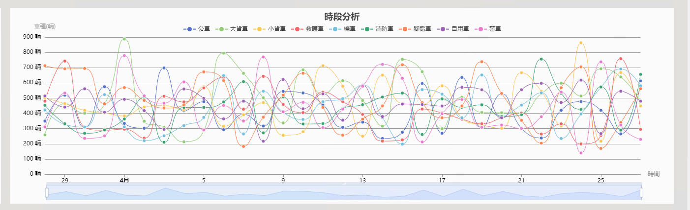
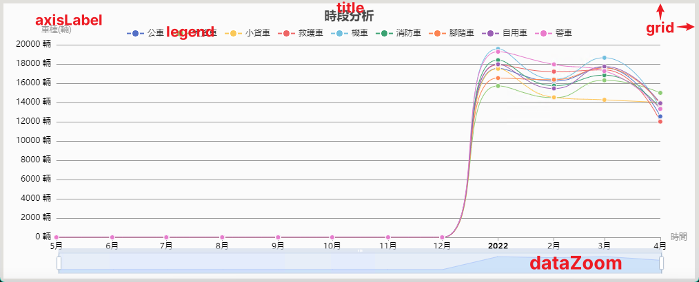
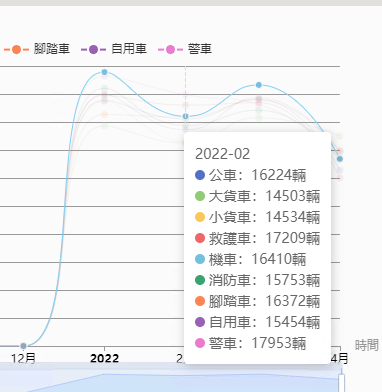

ECharts基本應用
同一段時間內多條折線圖的做法
ECharts
- ECharts是百度捐給Apache，開源免費的圖表套件
- 官方: https://echarts.apache.org/zh/index.html
同一段時間內多條折線圖
- 基本的用法其實官方就很多範例，比較麻煩的其實是同一段時間內多組數據、多條折線圖的做法
- 我當初也是花了一陣時間才搞懂怎做，最後類似這樣的效果

- 思路是這樣的，首先確定X軸(時間)的起點與終點，然後根據分割的最小時間單位(例如每天)，先產生出timeNodeArray 時間刻度數組，例如我從5/1~5/30號，那就會有30個節點
- timeNodeArray 可以在前端生成也可以在後端，我後來統一是做在後端，類似這樣
// 建立時間節點數組(xAxis)
FastDateFormat sdf = FastDateFormat.getInstance("yyyy-MM-dd");
List<String> xAxis = new ArrayList<>();
if (param.getStatsType() == 2) { // 以"月"為基本單位建立時間節點數組
sdf = FastDateFormat.getInstance("yyyy-MM");
int monthsBetween = monthsBetween(param.getStartTime(), param.getEndTime());
Calendar cal = Calendar.getInstance();
cal.setTime(param.getStartTime());
for (int i = 0; i < monthsBetween; i++) {
xAxis.add(sdf.format(cal.getTime()));
cal.add(Calendar.MONTH, 1);
}
} else if (param.getStatsType() == 3) { // 以"日"為基本單位建立時間節點數組
sdf = FastDateFormat.getInstance("yyyy-MM-dd");
int daysBetween = daysBetween(param.getStartTime(), param.getEndTime());
for (int i = 0; i < daysBetween; i++) {
Date nextTime = new Date(param.getStartTime().getTime() + (1000L * 60 * 60 * 24 * i));
xAxis.add(sdf.format(nextTime));
}
} else if (param.getStatsType() == 4) { // 以"時"為基本單位建立時間節點數組
sdf = FastDateFormat.getInstance("yyyy-MM-dd HH:mm:ss");
int hoursBetween = hoursBetween(param.getStartTime(), param.getEndTime());
for (int i = 0; i < hoursBetween; i++) {
Date nextTime = new Date(param.getStartTime().getTime() + (1000L * 60 * 60 * i));
xAxis.add(sdf.format(nextTime));
}
}
- 計算時間差的工具類，其實我很想用糊塗工具包…
/**
* 獲取兩個日期相差的月數
*/
public static int monthsBetween(Date d1, Date d2) {
Calendar c1 = Calendar.getInstance();
Calendar c2 = Calendar.getInstance();
c1.setTime(d1);
c2.setTime(d2);
int year1 = c1.get(Calendar.YEAR);
int year2 = c2.get(Calendar.YEAR);
int month1 = c1.get(Calendar.MONTH);
int month2 = c2.get(Calendar.MONTH);
int day1 = c1.get(Calendar.DAY_OF_MONTH);
int day2 = c2.get(Calendar.DAY_OF_MONTH);
// 獲取年的差值
int yearInterval = year1 - year2;
// 如果 d1的 月-日 小於 d2的 月-日 那麼 yearInterval-- 這樣就得到了相差的年數
if (month1 < month2 || month1 == month2 && day1 < day2) {
yearInterval--;
}
// 獲取月數差值
int monthInterval = (month1 + 12) - month2;
if (day1 < day2) {
monthInterval--;
}
monthInterval %= 12;
return Math.abs(yearInterval * 12 + monthInterval);
}
/**
* JAVA計算兩個日期相差多少天(by date)
*/
public static int daysBetween(Date date1, Date date2) {
Calendar cal = Calendar.getInstance();
cal.setTime(date1);
long time1 = cal.getTimeInMillis();
cal.setTime(date2);
long time2 = cal.getTimeInMillis();
long between_days = (time2 - time1) / (1000 * 3600 * 24);
return Integer.parseInt(String.valueOf(between_days));
}
/**
* JAVA計算兩個日期相差多少小時
*/
public static int hoursBetween(Date date1, Date date2) {
Calendar cal = Calendar.getInstance();
cal.setTime(date1);
long time1 = cal.getTimeInMillis();
cal.setTime(date2);
long time2 = cal.getTimeInMillis();
long between_hours = (time2 - time1) / (1000 * 3600);
return Integer.parseInt(String.valueOf(between_hours));
}
- 然後去DB撈對應的資料
// 車類對應編號
Map<String, String> carTypeMap = new HashMap<>();
carTypeMap.put("03", "大貨車"); // 大貨車
carTypeMap.put("04", "小貨車"); // 小貨車
carTypeMap.put("05", "公車"); // 公車
carTypeMap.put("06", "自用車"); // 自用車
carTypeMap.put("07", "機車"); // 機車
carTypeMap.put("08", "腳踏車"); // 腳踏車
carTypeMap.put("09", "救護車"); // 救護車
carTypeMap.put("10", "消防車"); // 消防車
carTypeMap.put("11", "警車"); // 警車
// 取得指定時間段的統計結果
List<IdentifyResultStatistics> rawStatsData = identifyResultRepo.findVehicleTypeAnalysis(param.getStartTime(), param.getEndTime(), param.getStatsType().toString(), param.getIdList());
// 依照車種分開
Map<String, List<IdentifyResultStatistics>> typeCollect = rawStatsData.stream().collect(Collectors.groupingBy(IdentifyResultStatistics::getEventType));
FastDateFormat finalSdf = sdf;
typeCollect.forEach((type, list) -> {
// 有在8種車內且有紀錄的
if (carTypeMap.containsKey(type) && list.size() > 0) {
List<Integer> yAxis = new ArrayList<>();
// 依照時間找到對應的X，填充Y
for (int i = 0; i < xAxis.size(); i++) {
// 如果db紀錄的時間等於時間節點
int finalI = i;
Optional<IdentifyResultStatistics> first = list.stream().filter(e -> finalSdf.format(e.getStatsTime()).equals(xAxis.get(finalI))).findFirst();
if (first.isPresent()) {
yAxis.add(Math.toIntExact(first.get().getValue()));
} else { // 假設沒有該時間節點的紀錄，則補0
yAxis.add(0);
}
}
// 總和
int total = yAxis.stream().mapToInt(val -> val).sum();
// 寫入
EChartsVo build = EChartsVo.builder()
.id(Long.parseLong(type))
.name(carTypeMap.get(type))
.total(total)
.xAxis(xAxis)
.yAxis(yAxis)
.build();
result.add(build);
// 有紀錄的就移出清單
carTypeMap.remove(type);
}
});
// 如果還剩某種車完全沒有紀錄
if (carTypeMap.size() > 0) {
// 全部補0
List<Integer> zero = new ArrayList<>();
for (int i = 0; i < xAxis.size(); i++) {
zero.add(0);
}
carTypeMap.forEach((k, v) -> {
EChartsVo build = EChartsVo.builder()
.id(Long.parseLong(k))
.name(v)
.total(0)
.xAxis(xAxis)
.yAxis(zero)
.build();
result.add(build);
});
}
// 排序
result.sort(Comparator.comparing(EChartsVo::getName));
return result;
}
- 如果資料量很大，map也可以轉parallelStream處理，例如這樣(但要注意處理資料有沒有先後順序的問題)
// 依照區域id分開
Map<Long, List<ParkingStats>> pIdMap = allStats.stream()
.collect(Collectors.groupingBy(ParkingStats::getPId));
pIdMap.entrySet().parallelStream().forEach(entry->{
List<ParkingStats> statsList = pIdMap.get(entry.getKey()); // entry.getKey() = key = pId
// 平均
double average = statsList.stream().mapToInt(ParkingStats::getCarIn).average().orElse(0.0);
// 紀錄
ParkingStats build = ParkingStats.builder()
.pId(entry.getKey())
.counterType(8)
.carIn((int) average)
.carOut(0)
.startTime(yesterday)
.statsType(3)
.createTime(now)
.updateTime(now).build();
parkingStatsRepo.save(build);
log.info("停車場 id={} 在 {} 的全日平均使用量已建立", entry.getKey(), yesterday);
});
- 總之我把"如果該時間節點沒有對應的數據，就補0"這件事在後端做了，最後後端傳出去的東西
@Data
@Builder
public class EChartsVo {
/**
* 代碼
*/
private Long id;
/**
* 名稱 20字
*/
private String name;
/**
* X軸(時間)"yyyy-MM-dd";
*/
@JsonProperty(value = "xAxis")
private List<String> xAxis;
/**
* Y軸(數值)
*/
@JsonProperty(value = "yAxis")
private List<Integer> yAxis;
/**
* 總數
*/
private Integer total;
/**
* Y軸平均
*/
private Double average;
}
- 去到前端，其實這邊也寫了一個補0的驗證，所以說其實做在哪都可以
- setOption是整個表格的設定，而多組資料就是放在seriesData這個數組裡，這邊做的事其實就是把後端傳來的EChartsVo的List遍歷(一個EChartsVo就是一條線)，塞到seriesData中，畫出表格
/**
* 建立Echarts圖表
* @param timeNodeArray 時間刻度數組
* @param myCharts 圖表的div dom物件，例如: const myCharts = echarts.init(document.getElementById('myCharts'));
* @param chartsData 資料，例如: [{"name":"水位1","xAxis":["2019-11-14 00:15:00","2019-11-14 00:30:00"],"yAxis":["0.94","0.94"]},{"name":"水位2"...}]
*/
function buildChart(timeNodeArray, myCharts, chartsData) {
//let today = start; // 日期（和數據日期對應）
let seriesData = []; // series內容
let contentData = [];
// 配置x軸
for (let xDateElement of timeNodeArray) {
contentData.push([xDateElement, ""]); // 預設時間節點該有的數據(用空數據進行填充)
}
if (!Array.isArray(chartsData) || chartsData.length == 0) {
return;
}
let minNum = 0,
maxNum = 0; // 記錄最大最小值，是圖標不留太多空白
// 修改格式為['時間','值']
chartsData.map((res, index) => {
// 配置當前數據的Y軸
let nowContentData = JSON.parse(JSON.stringify(contentData));
if (res.yAxis.length > 0) {
res.yAxis.map((yRes, yIndex) => {
// 獲取最大最小值（根據業務需要）
if (index == 0 && yIndex == 0) {
minNum = yRes;
maxNum = yRes;
} else if (yRes < minNum) {
minNum = yRes;
} else if (yRes > maxNum) {
maxNum = yRes;
}
// 此處直接push賦值會造成整點有一個空數據和一個有數據的情況，所以需要判斷整點
// 如果直接更改整點的數據會產生雙倍數量的折線，所以需要先刪除為空值的整點數據，在進行整點的賦值
let arrIndex = nowContentData.findIndex(item => item[0] == res.xAxis[yIndex]);
if (arrIndex != -1) {
nowContentData.splice(arrIndex, 1);
}
nowContentData.push([res.xAxis[yIndex], yRes]); // 填充傳過來的x軸和y軸
});
}
seriesData.push({
name: res.name,
type: "line",
smooth: true,
symbol: "circle",
symbolSize: 7, // 線上的小圓點
lineStyle: {
normal: {
width: 1 // 線段粗細
}
},
emphasis: {
focus: 'series'
},
// 此處定義小圓點的大小和顏色
itemStyle: {
normal: {
// color: `rgb(${res.color})`,
borderColor: "#fff",
borderWidth: 1
}
},
data: nowContentData,
//使用基準線，記得引入require('echarts/lib/component/markLine')
markLine: {
silent: true,
symbol: "none",
label: {
position: "middle",
formatter: "{b}"
},
data: []
},
});
});
myCharts.setOption({
title: {
text: '時段分析',
padding: 10,
left: 'center'
},
legend: {
orient: 'horizontal',
top: '8%',
},
backgroundColor: '#fbfbfb',
// tooltip的配置
tooltip: {
trigger: "axis",
axisPointer: {
lineStyle: {
color: "#ddd"
}
},
formatter: val => {
let text = "";
text = `${val[0].data[0]}<br/>`; // 時間
val.map((res, index) => {
// 名字
text += `${res.marker}${res.seriesName}：`;
// 值
if (res.data[1] === 0 || res.data[1]) {
text += `${res.data[1]}` + "輛";
} else {
text += "暫無數據";
}
text += "<br/>";
});
return text;
},
textStyle: {
align: "left"
}
},
// 圖表位置
grid: {
top: "15%",
left: "2%",
right: "5%",
bottom: "10%",
containLabel: true
},
xAxis: {
type: "time",
// x軸單位
name: "時間",
nameTextStyle: {
color: "#999"
},
// x軸0值時橫線的顏色
axisLine: {
lineStyle: {
color: "#999"
}
},
// x軸坐標文字的顏色配置
axisLabel: {
show: true,
textStyle: {
color: '#000'
},
interval: 3600,
},
data: timeNodeArray,
min: timeNodeArray[0], //`${today}` // 初始為0點
},
yAxis: {
splitNumber: 10, // y軸間隔數量
type: "value",
name: "車種(輛)", // 單位
nameTextStyle: {
color: "#999" // 單位顏色
},
// y軸0值時的縱線顏色
axisLine: {
lineStyle: {
color: "#999"
}
},
// y坐標文字的顏色
axisLabel: {
formatter: function(value, index) {
return value.toFixed(0) + " 輛";
},
show: true,
textStyle: {
color: "#000"
},
},
// 平行於x軸的橫向線顏色
splitLine: {
show: true,
lineStyle: {
color: "#999"
}
},
},
// 縮放
dataZoom: [{
type: 'slider',
start: 0,
end: 100,
minValueSpan: 3600 * 3 * 1000,
}, {
type: 'inside',
start: 0,
end: 100,
minValueSpan: 3600 * 3 * 1000,
}],
series: seriesData,
});
}
- 補充一下這些元件設定的名稱(官網就有，不過最常用的應該就是這些)

- tooltip就是浮動提示，而聚焦淡化效果是這個(我覺得這個在線很多條時很重要)
emphasis: {
focus: 'series'
},

- 圓餅圖
/**
* 圓餅圖
*/
function buildPieChart(myCharts, chartsData) {
let legend = [];
chartsData.map((res, index) => {
legend.push(res.name);
})
let option = {
title: {
text: '車種佔比',
padding: 10,
left: 'center'
},
tooltip: { // 提示
trigger: "item", // 觸發方式
formatter: "{b}: {c}輛<br/>({d}%)" // 提示的格式
},
legend: { // 圖例
bottom: 10,
left: 'center',
},
backgroundColor: '#fbfbfb',
series: [{
name: "車種佔比",
type: "pie", // 圖標的類型
radius: "60%", // 餅圖的範圍
avoidLabelOverlap: false,
label: {
normal: {
formatter: '{b}\n{d}%',
textStyle: {
fontWeight: 'normal',
fontSize: 15
}
},
emphasis: {
show: true,
textStyle: {
fontWeight: "bold"
}
}
},
labelLine: {
length: 1
},
data: chartsData,
}]
};
myCharts.setOption(option);
}
上次修改於 2022-04-25